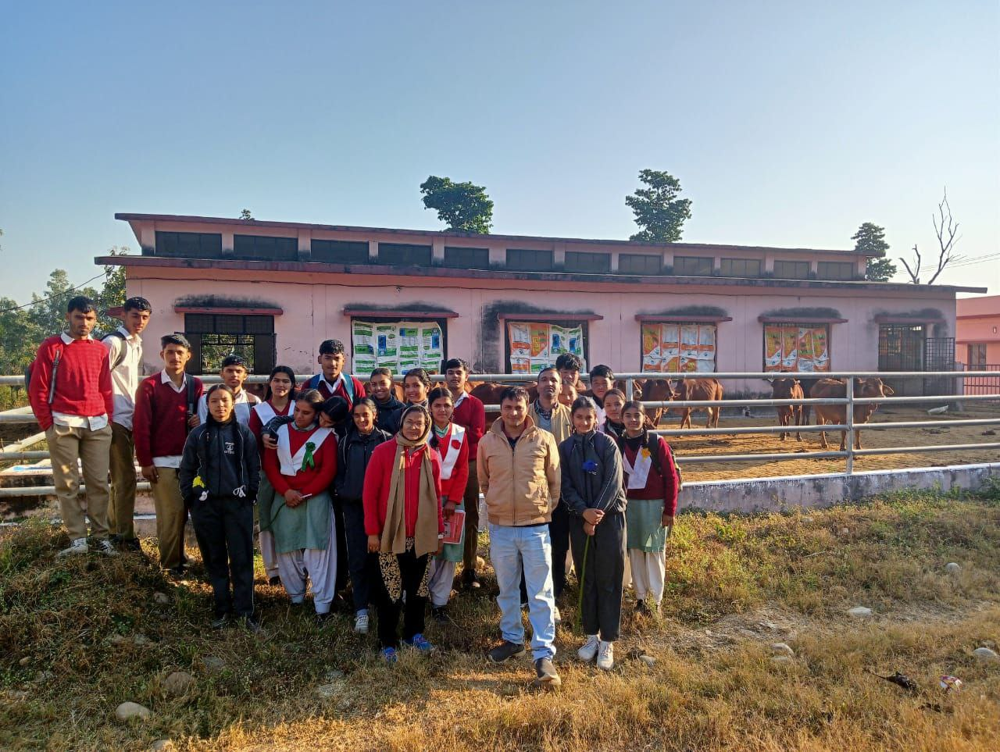
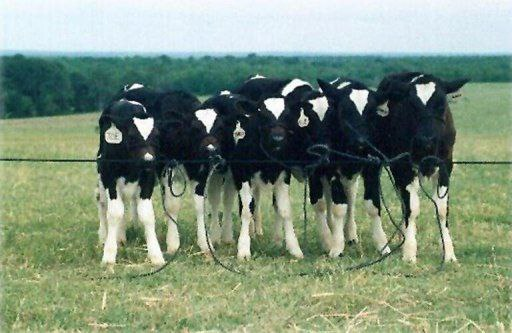
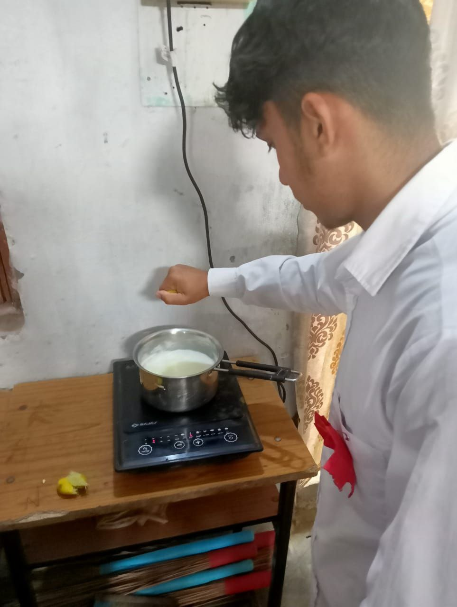
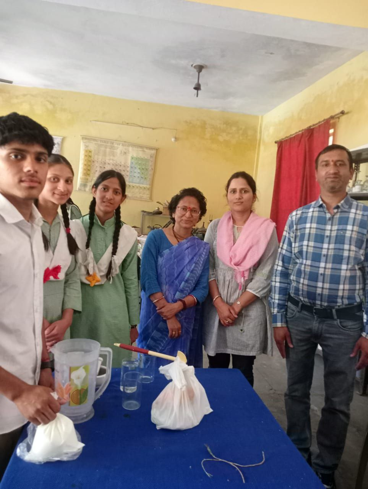
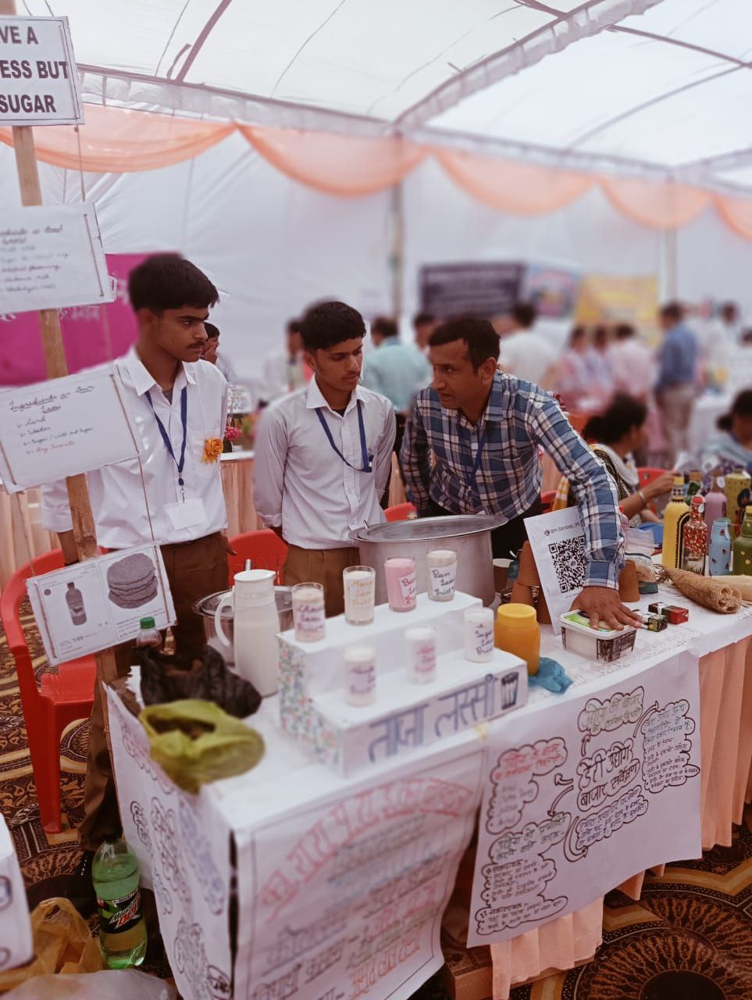
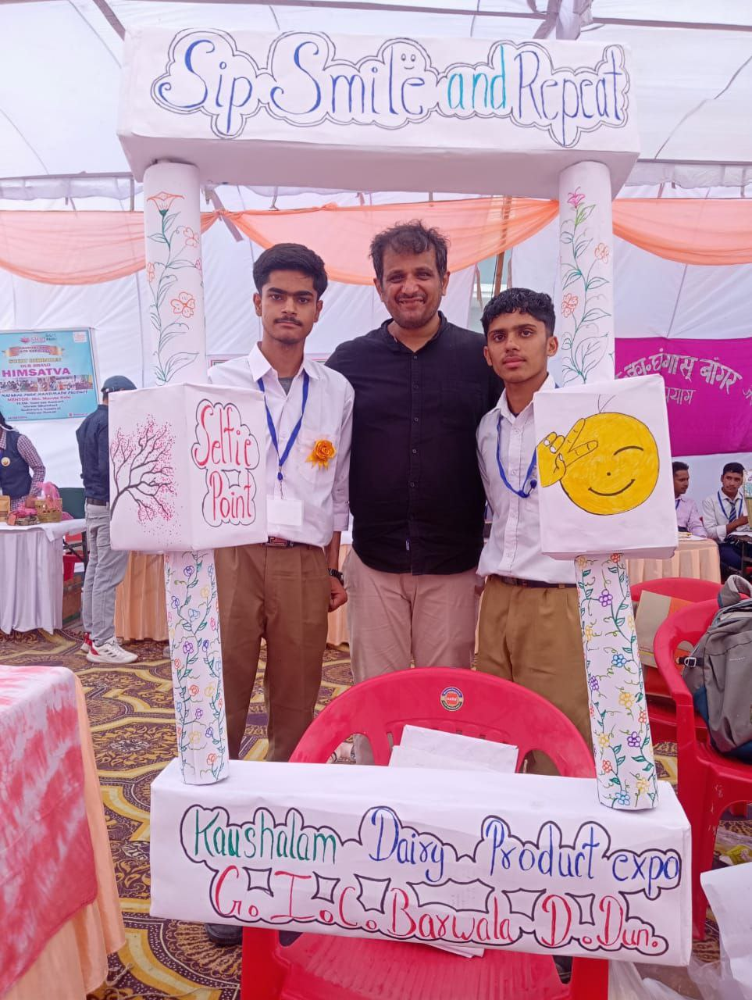
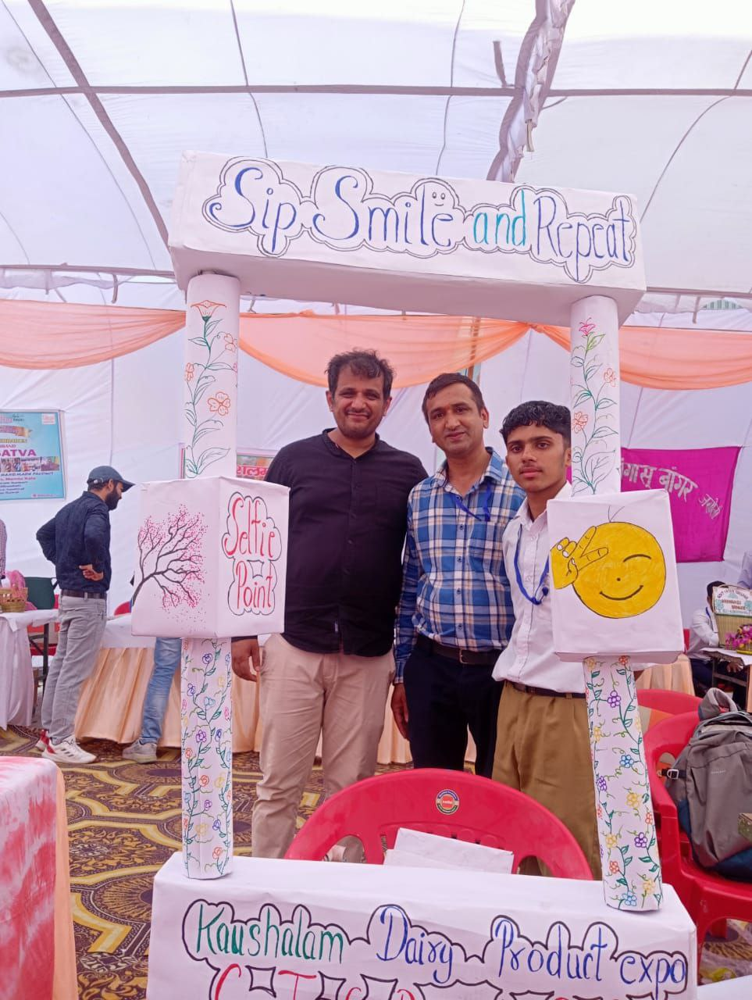
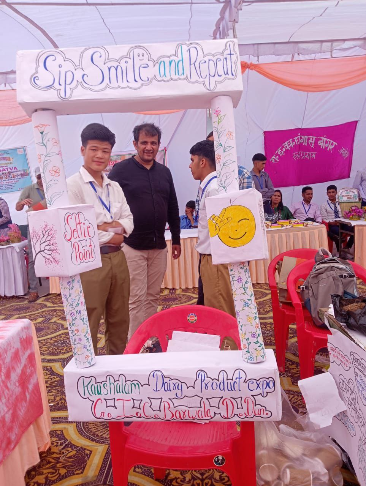

मेरा नाम मो० समीर हसन तथा मेरे दो मित्र हिमाशु.वंश है हम रा इ का बाडवाला विकासनगर देहरादून मेहम 12 वीं कक्षा में पड़ता हूँ हमारे स्कूल में 11 वीं कक्षा से कौशलम कार्यक्रम चलता आ रहा है। हमने इसके जरिये उद्यमशीलता की जानकारी प्राप्त की। 11 वीं कक्षा में हमारे कौशलम का उद्देश्य एक नया घर से चलने वाला उद्योग शुरू करना था।
2024 में हमारी कक्षा कालसी में उपास्थित एक डेरी उद्योग में भ्रमण करने गई वहाँ हमारे शिक्षक अमृत लाल शर्मा के द्वारा हमे विचार आया कि क्यो न हम भी एक छोटा डेरी उद्योग शुरू करें। मैं और मेरे दो मित्र वंश कुमार, हिमांशु ने मिलकर 11वीं कक्षा से स्कूल से ही डेरी बिजनस शुरू करने का सोचा । हमने अपना यह विचार अपने शिक्षक अमृत लाल शर्मा को सुनाया उन्होंने हमारे इस विचार को प्रोत्साहित किया। उनके जरिये हमने लस्सी बनाना, पनीर बनाना, घी बनाना सीखा ।  
हमने हमारे शिक्षक के साथ मिलकर विद्यालय में लस्सी बनाई और नए स्वाद के साथ इन लस्सयो को बनाया जैसे   ¤बुराश ¤पान ¤स्ट्रॉबेरी ¤इलाइची ¤चॉकलेट
में पता लगा कि जिला स्तर पर प्रतिभाग करने हेतु हमारे विद्यालय से हमारे डेरी उद्योग का चयन हुआ तभी से हमने इसके लिए तैयारिया शुरू कर दी। हमने हमारे उद्योग का नाम सोचकर Sip Smile and Repeat रखा हमने इस नाम को हमारे शिक्षक अमृत लाल को दिखाया उन्होंने इस नाम का प्रोत्साहन किया और उनकी मदद से हमने इस कार्यक्रम में प्रस्तुत करने हेतु चार्ट व अन्य तैयारिया की।।
हमने बाजार में मिलने वाली जरूरत मन्द वस्तुओ का मूल्य जाना जैसे ¤दही ¤बादाम ¤चीनी ¤काजू ¤इलाइची इन वस्तुओं तथा अपने मुनाफे को देखते हुए हमने अपने उत्पादो का मूल्य तय किया।
कार्यक्रम के दिन हमारे द्वारा इन वस्तुओं को इकट्ठा किया गया तथा मुख्य तौर पर दही, घी और पनीर की व्यवस्था हमने इन्हें खुद घर के दूध से बनाकर की ।कार्यक्रम के दिन हमने इस कौशलम कार्यक्रम में प्रतिभाग किया हमें हमारी बनाई हुई लस्सी के भिन्न-भिन्न स्वादो से एक अच्छा रिस्पॉन्स मिला हमने लगभग कार्यक्रम के अन्तर्गत ही हजार रूपये कमा लिये इसके साथ-साथ हमने जिला स्तर पर द्वीतीय स्थान प्राप्त किया इसके साथ-साथ हमें वहाँ उपस्थित शिक्षको द्वारा राज्य स्तर के लिए कुछ गाइडेंस भी दी जैसे= ¤लस्सी को और ज्यादा स्वस्थ बनाने के लिए चिनी की जगह शक्कर का प्रयोग। ¤लस्सी के और स्वादो का उपयोग करना ¤बाजार में उपस्थित अन्य ब्रैन्ड की लस्सयो की अपेक्षा हमारी बनाई हुई लस्सि को और बेहतर बनाने का प्रयास करना।
जिला स्तर पर द्वितीय स्थान प्राप्त करने के बाद हमे अब राज्य स्तर पर प्रतिभाग करना था इसकी तैयारी के लिए हमने शिक्षकों द्वारा दी गई गाइडेस के ऊपर कार्य किया। हमने बहुत सारी मेहनत करी ।तैयारी -: जिला स्तर पर द्वितीय स्थान प्राप्त करने के बाद हमे अब राज्य स्तर पर प्रतिभाग करना था इसकी तैयारी के लिए हमने शिक्षकों द्वारा दी गई गाइडेस के ऊपर कार्य किया। हमने बहुत सारी मेहनत करी ।
लस्सी के कुछ नए स्वादों पर कार्य किया अब हमने नए स्वाद जोड़े जैसे
    कार्यक्रम के दिन हमने बहुत सी नई-नई चीजे सीखी हम श्री हर्षित सर जो एक उत्तराखण्ड के जाने माने उद्यमी है उनसे मिले उन्होंने हमें आगे के लिए गाइड किया। हमने इस दिन 3000 की कमाई लस्सी बेचकर की । दुर्भाग्यवश हम राज्य स्तरीय कार्यक्रम में कोई स्थान प्राप्त नहीं कर पाए परन्तू हमने कौशलम के जरिये उद्यमशीलता की जानकारी प्राप्त की और हम बहुत खुश है कि हमने खुद एक डेरी उद्योग शुरू किया ।
While lassi is at our heart, we also take pride in our other dairy products. Our ghee is made from pure, clarified butter, giving it a rich aroma and authentic flavor. Our paneer is soft, fresh, and perfect for a variety of dishes. We source our milk from trusted local farms to ensure the highest quality in everything we create.
Thank you for being a part of our story. We can't wait to serve you!